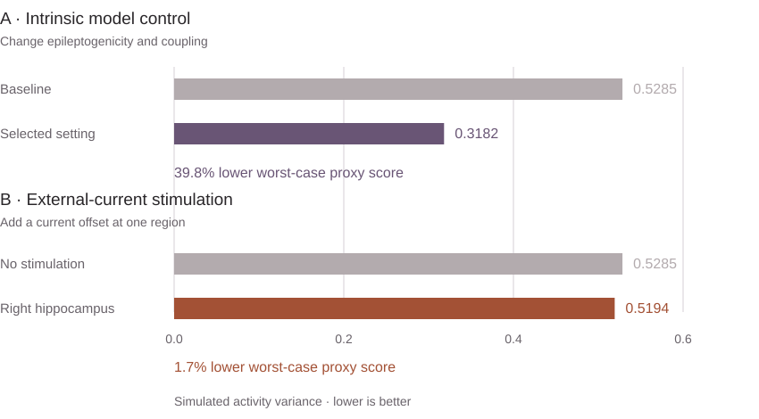
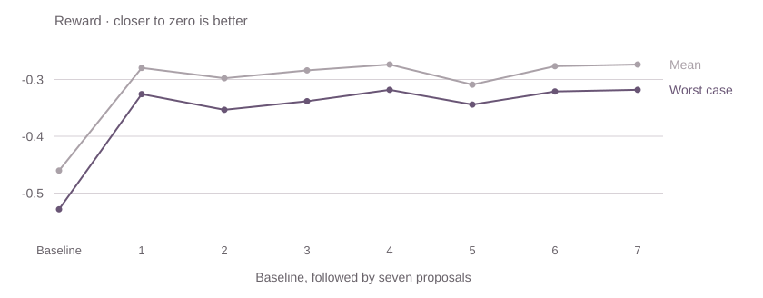
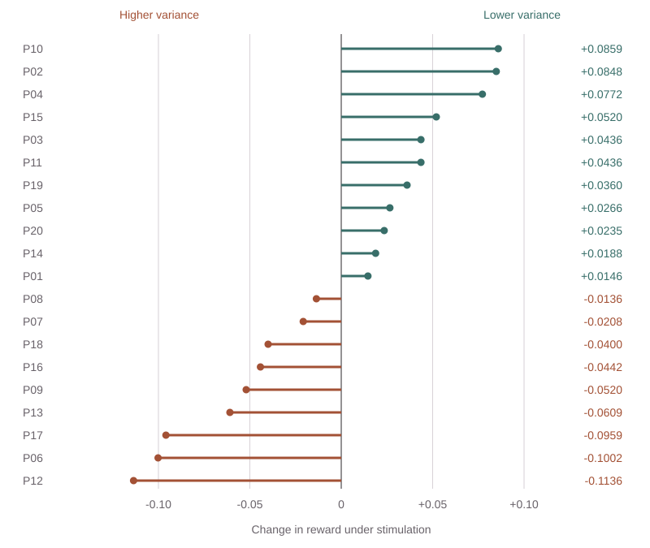

A brain stimulation setting can help one patient and fail another. That makes an encouraging average only part of the story.
This study asks a narrower question in simulation: can a search process improve the weakest response across a group of virtual patients? It combines ideas from the epilepsy literature, proposals from a language model, and experiments in The Virtual Brain.
The answer depends on what the optimizer is allowed to change. Adjusting the model’s internal parameters produced a large improvement. Applying an external-current stimulus produced a much smaller one—and the selected stimulus showed no overall benefit in a separate, more varied virtual cohort.
This is an in silico proof of concept: a way to investigate hypotheses about seizure dynamics, with no evidence here of clinical efficacy.
Let the model propose.
Let the simulator decide.
The project begins with 136 PubMed papers on epilepsy, brain modeling, and neuromodulation. A language model extracts 1,080 candidate research ideas and helps select a question that can be tested: how well do proposed settings hold up across different virtual patients?
For the experiment, The Virtual Brain connects 76 brain regions. Each region follows the Epileptor model, a set of equations that describes seizure-like dynamics. Changing the model’s parameters creates variation between simulated patients; these are not digital replicas fitted to individual people.
From a proposal to a measured result
Intrinsic model control · the simulator evaluates every proposal
params = {"x0": -2.1, "coupling_a": 0.0165}x1 = data[:, 0, :, 0]
seizure_intensity = np.mean(
np.var(x1, axis=0)
)
return -float(seizure_intensity)# Cohort evaluator
return min(rewards), ...
# Optimizer
history.append(...)
best_worst = max(
best_worst, worst
)Code is excerpted and line-wrapped; ellipses mark omitted fields. The baseline is followed by seven proposals.
To score an experiment, the study measures how much the simulated activity fluctuates over time, averaged across brain regions. Lower variance counts as better in this model. The reward is the negative of that score, so a less negative reward is better.
Instead of selecting the best average response, the search selects the candidate with the best worst-case reward. This is the minimax objective. It focuses the search on the least favorable response among the patients actually sampled; it does not guarantee performance for every possible patient.
The objective, in mathematical terms
R = − mean temporal variance of the fast Epileptor state, x₁
The five-patient search cohort varies scalar coupling by uniform perturbations in [−0.003, 0.003]. The archived intrinsic search evaluates a baseline plus seven proposals; the external-current search evaluates eight proposals. The reward is a simulation endpoint, not seizure frequency, cognition, or quality of life.
Changing the model is easier than controlling it from outside.
The first experiment gives the optimizer direct access to two internal controls: how seizure-prone the model is (x0) and how strongly its regions interact (K). This is a positive control—a test of whether the search can find a more favorable dynamical regime when it can change the system itself.
The second experiment holds those intrinsic settings fixed. The optimizer can only choose a region and add an external-current offset there. This is a more constrained intervention, although it still does not model an implanted electrode or a stimulation waveform.
The size of the gain depends on what can change
Worst-case activity variance across the five-patient search cohort

The selected intrinsic setting improved the worst-case reward from −0.5285 to −0.3182, a reported 39.8% gain. The selected external-current setting—a boost of 0.6 at the right hippocampus—improved it only to −0.5194, or 1.7%.
That gap is the central finding. It shows that finding a favorable regime inside a model and reaching it with a constrained input are different problems.
Inspect the intrinsic search and secondary evaluations

The selected setting is x0 = −2.1, K = 0.0165. The initial setting is x0 = −1.6, K = 0.0152. Later proposals do not improve monotonically.
| Cohort | n | Baseline | Selected | Gain |
|---|---|---|---|---|
| Search trajectory | 5 | −0.5285 | −0.3182 | 39.8% |
| Held-out artifact | 8 | −0.4985 | −0.3346 | 32.9% |
| Stress artifact | 30 | −0.5175 | −0.4047 | 21.8% |
Source: paper Table 2 and generalization_data.json. These are archived secondary evaluations, without documentation that the cohorts were locked before optimization. The artifact’s narrow, medium, and wide variability arrays are identical, so they are not shown as independent robustness checks.
Explore the archived 3D brain and technical notebook
The original regional visualization compares the intrinsic baseline and selected settings. Its region colors are an illustrative simulation output, not a map of treatment benefit or results for the 20-patient cohort.
Open the interactive 3D view ↗The notebook also preserves the original waveform, search-history, literature, and optimizer-comparison explorers.
Eleven improved.
Nine worsened.
A useful setting should also be tested outside the small cohort used to select it. The study applies the right-hippocampal stimulus to 20 virtual patients with more varied connectivity and seizure-onset locations.
Responses split in both directions: 11 virtual patients have a lower variance score under stimulation, while 9 have a higher one. The mean reward changes from −0.4501 to −0.4518. The reported paired test provides no evidence of an aggregate benefit (p = 0.9019).
One stimulus, twenty different responses
Right hippocampus · external-current boost 0.6

11 of 20 improved; 9 worsened. Each mark is one virtual patient.
The temporal-onset subgroup shows a positive mean change, but it contains only two virtual patients. That is a question for a follow-up experiment, not a reliable basis for selecting patients.
A search objective can protect the weakest response in its own sampled cohort and still fail to transfer. The distribution of patients used to test an intervention is part of the scientific question.
Read the cohort statistics and subgroup results
| Location | n | Mean change | SEM |
|---|---|---|---|
| Temporal | 2 | +0.0563 | 0.0297 |
| Hippocampal | 9 | −0.0078 | 0.0191 |
| Frontal | 4 | −0.0043 | 0.0302 |
| Occipital | 5 | −0.0119 | 0.0363 |
Reported full-cohort statistics: paired t = −0.125; two-sided p = 0.9019; standardized effect size d = −0.049. These are descriptive statistics for a small simulated cohort, not clinical evidence. SEM is the standard error of the mean.
Source: paper §5.4 and Table 4. The separate cohort varies connectivity weights and seizure-onset locations, rather than just the scalar coupling used during the search.
How good was the proposal?
A language model is useful here if it suggests worthwhile experiments with a limited simulation budget. The paper examines that idea in two ways: a small comparison with Bayesian optimization, and a later survey of the bounded stimulation space.
In the archived eight-evaluation comparison, the LLM-guided search reached −0.5194 and Bayesian optimization reached −0.5221. The difference is 0.0027 reward units. A single, small comparison cannot establish that one optimizer is generally better.
The later landscape evaluated 76 regions at 10 current offsets. The selected right-hippocampal setting ranked fourth among the 760 archived records, 0.0082 reward units below the best recorded result. This places the proposal in context, but the archive also contains variability between nominally identical zero-stimulation configurations, which limits how strongly the ranking can be interpreted.
Inspect the landscape comparison and its limits
| Candidate or comparator | Worst reward | Gap to best |
|---|---|---|
| Best recorded: lPFCDM, boost 3.0 | −0.4351 | 0 |
| Selected: rHC, boost 0.6 | −0.4433 | 0.0082 |
| Median best of 8 random draws | −0.4735 | 0.0384 |
| Stored rHC zero-boost baseline | −0.4968 | 0.0617 |
These values come from a later TVB runtime and must be compared within this archive. They are not interchangeable with the earlier −0.5285 baseline or the 1.7% archived search result.
The archived landscape assigns different rewards to nominally identical zero-boost configurations: their worst-case scores range from −0.5760 to −0.4390. The ranking is therefore shown as an exploratory artifact; controlled repeat runs are needed before attributing these differences to target or intensity.
Sources: paper §4.7 and Table 3; landscape data; optimizer comparison. The artifact note is a direct consistency check of the linked data, distinct from the paper’s reported interpretation.
The defensible role for the language model is a proposal engine inside an auditable experiment. Stronger claims about sample efficiency require repeated, controlled comparisons and a wider set of baselines.
A way to test ideas—and see where they stop working.
The contribution is an auditable workflow from a literature-informed question to a simulation experiment. It makes the candidate, the objective, the result, and the failure cases available for inspection.
Several limits define what comes next. The activity-variance score does not capture the full consequences of seizures. A constant current offset leaves out electrode geometry, pulse shape, timing, and charge balance. And a synthetic cohort based on a shared connectome does not capture the variation in real patients.
The next experiments should control initial conditions and repeat simulations, compare optimizers across repeated budgets, and test richer stimulation protocols on independently specified cohorts. Clinical relevance would require patient-specific data and validation beyond this simulation study.
The encouraging result is that the search can find a more favorable model regime. The more consequential question is how to reach such a regime with an intervention that holds up across patients.